PREDIKSI DETAK JANTUNG UNTUK DETEKSI DINI KEGAGALAN JANTUNG PASIEN KOGNESTIF BERAT#
Dataset : BIDMC Congestive Heart Failure Database https://physionet.org/content/chfdb/1.0.0/
Bisnis Understading#
1. Latar Belakang#
Kegagalan Jantung Kongestif (CHF) adalah salah satu kondisi medis kronis yang paling umum dan serius di seluruh dunia. Organisasi Kesehatan Dunia (WHO) melaporkan bahwa CHF memengaruhi jutaan orang setiap tahunnya dan merupakan salah satu penyebab utama kematian dan beban kesehatan di seluruh dunia. Seiring bertambahnya usia penduduk dan perubahan gaya hidup, seperti pola makan yang tidak sehat dan tingkat aktivitas fisik yang rendah, prevalensi CHF di Indonesia terus meningkat.
Ketika jantung tidak dapat memompa darah secara efektif untuk memenuhi kebutuhan tubuh, cairan terkumpul di paru-paru, hati, dan jaringan tubuh lainnya. Ini menyebabkan CHF. Gejala serius seperti sesak napas, kelelahan, dan pembengkakan pada kaki dapat menyebabkan CHF yang lebih parah, yang dapat meningkatkan angka kematian dan kualitas hidup pasien.
Untuk meningkatkan prognosis pasien dan mencegah komplikasi serius, deteksi dini CHF sangat penting. Namun, ini seringkali sulit karena gejala awal CHF seringkali tidak spesifik dan mirip dengan kondisi medis lainnya. Akibatnya, metode yang lebih efisien dan akurat diperlukan untuk mengidentifikasi CHF pada tahap awal.
Salah satu cara penting untuk mengetahui seberapa baik kesehatan jantung dan sistem kardiovaskular secara keseluruhan adalah dengan melihat detak jantung, atau detak jantung. Ada bukti bahwa variabilitas detak jantung, juga dikenal sebagai variabilitas detak jantung (HRV), merupakan biomarker penting untuk memantau kesehatan jantung. Jika ada perubahan dalam pola detak jantung, seperti peningkatan atau penurunan yang tidak wajar, ini dapat menjadi tanda bahwa ada masalah dengan fungsi jantung.
Penelitian telah menunjukkan bahwa pasien dengan CHF sering mengalami perubahan signifikan dalam detak jantung mereka. Misalnya, peningkatan detak jantung dapat menunjukkan bahwa jantung bekerja lebih keras untuk memompa darah, sementara penurunan detak jantung dapat menunjukkan bahwa jantung tidak mampu memompa darah sebanyak yang dibutuhkannya. Oleh karena itu, analisis detak jantung dapat menjadi cara yang bagus untuk menemukan kegagalan jantung sejak dini.
Data sains telah menjadi alat penting dalam bidang kesehatan di era digitalisasi, khususnya dalam deteksi dan prediksi kondisi medis jangka panjang seperti CHF. Para peneliti dapat menemukan pola dan tren yang tidak terlihat oleh analisis tradisional dengan menggunakan teknik machine learning dan analisis data besar.
Tenaga medis dapat mendapat manfaat dari proyek sains data yang berfokus pada prediksi detak jantung untuk deteksi CHF dini. Model prediktif yang akurat dapat membantu keputusan klinis, memungkinkan intervensi yang lebih cepat, dan menyesuaikan perawatan pasien dengan lebih baik. Teknologi ini juga dapat meningkatkan efisiensi operasional dan mengurangi biaya perawatan jangka panjang.
Data fisiologis pasien, seperti rekaman elektrokardiogram (ECG), detak jantung, interval RR, dan berbagai parameter lainnya yang terkait dengan kondisi jantung pasien, termasuk dalam BIDMC Congestive Heart Failure Database, yang merupakan salah satu dataset yang paling komprehensif dan banyak digunakan dalam penelitian tentang penyakit jantung koroner (CHF).
Dataset ini memiliki lebih dari 1200 entri data, yang memberikan basis yang kuat untuk pengembangan model prediktif dan ekstraksi fitur. Sifat-sifat seperti rata-rata, standar deviasi, nilai maksimum dan minimum sinyal elektrokardiogram, serta interval RR dan detak jantung per menit (bpm) memberikan informasi mendalam yang dapat digunakan untuk mengidentifikasi pola yang terkait dengan CHF.
2. Rumusan Masalah#
Bagaimana Memprediksi Risiko Kegagalan Jantung pada Pasien Kongestif Berat Berdasarkan Data Detak Jantung? Deskripsi: Meskipun detak jantung ada
Sejauh Mana Model Prediktif Dapat Diintegrasikan ke dalam Praktik Klinis untuk Mendukung Deteksi Dini Kegagalan Jantung?
Bagaimana Mengukur dan Memvalidasi Kinerja Model Prediktif dalam Konteks Deteksi Dini Kegagalan Jantung?
3. Tujuan#
Membangun dan melatih model machine learning yang dapat memprediksi risiko kegagalan jantung berdasarkan data fisiologis yang tersedia.
Menggunakan algoritma yang sesuai untuk mencapai akurasi prediksi yang optimal.
Menganalisis hasil prediksi model untuk mengidentifikasi faktor-faktor utama yang mempengaruhi risiko kegagalan jantung.
Data Collecting#
Basis data ini mencakup rekaman EKG jangka panjang dari 15 subjek (11 pria, berusia 22 hingga 71 tahun, dan 4 wanita, berusia 54 hingga 63 tahun) dengan gagal jantung kongestif berat (kelas NYHA 3–4). Kelompok subjek ini merupakan bagian dari kelompok studi yang lebih besar yang menerima terapi medis konvensional sebelum menerima agen inotropik oral, milrinon. Rincian lebih lanjut tentang kelompok studi yang lebih besar tersedia dalam referensi pertama yang dikutip di atas. Sejumlah studi tambahan telah menggunakan rekaman ini; lihat referensi tambahan di bawah ini.
Rekaman individual masing-masing berdurasi sekitar 20 jam, dan berisi dua sinyal EKG yang masing-masing diambil sampelnya pada 250 sampel per detik dengan resolusi 12-bit pada rentang ±10 milivolt. Rekaman analog asli dibuat di Rumah Sakit Beth Israel Boston (sekarang Beth Israel Deaconess Medical Center) menggunakan perekam EKG ambulatori dengan lebar pita perekaman tipikal sekitar 0,1 Hz hingga 40 Hz. File anotasi (dengan sufiks .ecg) disiapkan menggunakan detektor otomatis dan belum dikoreksi secara manual.
Ekstraksi Fitur#
import wfdb # type: ignore
import numpy as np # type: ignore
import pandas as pd # type: ignore
import matplotlib.pyplot as plt # type: ignore
from scipy.signal import find_peaks # type: ignore
import seaborn as sns # type: ignore
---------------------------------------------------------------------------
ModuleNotFoundError Traceback (most recent call last)
Cell In[1], line 1
----> 1 import wfdb # type: ignore
2 import numpy as np # type: ignore
3 import pandas as pd # type: ignore
ModuleNotFoundError: No module named 'wfdb'
# record_name = 'chf14'
# record_path = 'files/'
Baca Rekaman ECG
# record = wfdb.rdrecord(record_path + record_name)
# signal = record.p_signal # Bentuk (n_samples, n_channels)
# fs = record.fs # Sampling rate, biasanya 250 Hz
# print(f"Sampling rate: {fs} Hz")
Sinyal ECG direkam dengan sampling rate (f_s) (Hz). Waktu untuk setiap sampel dihitung sebagai:
(t[i]): Waktu pada sampel ke-(i) (dalam detik).
(f_s): Sampling rate (contoh: 250 Hz).
baca Anotasi R-peaks
# try:
# annotation = wfdb.rdann(record_path + record_name, 'ecg')
# r_peaks = annotation.sample
# print(f"R-peaks dari anotasi: {len(r_peaks)} puncak")
# except Exception as e:
# print("Anotasi tidak ditemukan atau tidak dapat dibaca. Melakukan deteksi R-peaks manual.")
# # Memilih salah satu channel ECG, misalnya lead 1 (channel 0)
# ecg_signal = signal[:, 0]
# peaks, properties = find_peaks(
# ecg_signal,
# height=np.mean(ecg_signal) + 0.5 * np.std(ecg_signal),
# distance=fs * 0.4 # minimal 0.4 detik antar R-peaks
# )
# r_peaks = peaks
# print(f"R-peaks terdeteksi secara manual: {len(r_peaks)} puncak")
Jika anotasi R-peaks tersedia, nilai langsung diambil. Namun, jika tidak, deteksi manual dilakukan dengan:
Ambang Deteksi: $\( \text{threshold} = \mu_{\text{ECG}} + 0.5 \cdot \sigma_{\text{ECG}} \)$
- \[ \mu\text{ECG} = \text{Rata-rata amplitudo sinyal ECG.} \]
- \[ \sigma\text{ECG} = \text{Standar Deviasi sinyal ECG.} \]
Jarak Minimum Antar Puncak: $\( \text{distance} = f_s \cdot 0.4 \)$
0.4 detik adalah jarak minimum antar detak jantung (aturan fisiologis).
Menghitung RR_Interval dan HR (Heart Rate)
# n_samples = signal.shape[0]
# time = np.arange(n_samples) / fs
# RR_intervals = np.diff(r_peaks) / fs
# heart_rate = 60 / RR_intervals
# time_hr = time[r_peaks[1:]]
Menghitung RR Interval
RR interval adalah selisih waktu antar R-peaks:
(RR[i]): RR interval ke-(i) (dalam detik).
(r[i]): Indeks sampel dari R-peak ke-(i).
(f_s): Sampling rate.
Menghitung Heart Rate (HR)
Heart rate dihitung sebagai:
(\text{HR}[i]): Heart rate pada interval ke-(i) (dalam beats per minute atau BPM).
60: Konversi dari detik ke menit.
# # Membuat DataFrame ECG
# df_ecg = pd.DataFrame({
# 'time_s': time,
# 'ecg_lead1_mV': signal[:, 0],
# 'ecg_lead2_mV': signal[:, 1]
# })
# # Membuat DataFrame Heart Rate
# df_hr = pd.DataFrame({
# 'time_s': time_hr,
# 'heart_rate_bpm': heart_rate,
# 'RR_interval_s': RR_intervals
# })
# # Menyimpan DataFrame Awal ke CSV (Opsional)
# df_ecg.to_csv('chf15_ecg_timeseries.csv', index=False)
# df_hr.to_csv('chf15_heart_rate_rr.csv', index=False)
# df_hr['time_s'] = pd.to_timedelta(df_hr['time_s'], unit='s')
# print("\nSetelah konversi 'time_s' ke Timedelta:")
# print(df_hr['time_s'].head())
# print(df_hr['time_s'].dtype)
# df_hr.set_index('time_s', inplace=True)
Resampling data ke menit
Resampling dan Penggabungan Resampling Heart Rate Heart rate diambil rata-rata setiap menit dengan interpolasi linier: $\( \text{HR}_{\text{resampled}}[t] = \text{mean}(\text{HR}[t_1:t_n]) \)$
# df_hr_resampled = df_hr.resample('1T').mean().interpolate()
# df_hr_resampled.reset_index(inplace=True)
# df_hr_resampled['time_s'] = df_hr_resampled['time_s'].dt.total_seconds()
# print("\nDataFrame Heart Rate setelah Resampling Per Menit:")
# print(df_hr_resampled.head())
# print(df_hr_resampled.dtypes)
# # Agregasi DataFrame ECG per Menit
# df_ecg['time_s_td'] = pd.to_timedelta(df_ecg['time_s'], unit='s')
# df_ecg.set_index('time_s_td', inplace=True)
# # Resample ECG per Menit dan Hitung Fitur-fitur
# df_ecg_resampled = df_ecg.resample('1T').agg({
# 'ecg_lead1_mV': ['mean', 'std', 'max', 'min'],
# 'ecg_lead2_mV': ['mean', 'std', 'max', 'min']
# })
# # Flatten MultiIndex columns
# df_ecg_resampled.columns = ['_'.join(col).strip() for col in df_ecg_resampled.columns.values]
# df_ecg_resampled.reset_index(inplace=True)
# df_ecg_resampled['time_s'] = df_ecg_resampled['time_s_td'].dt.total_seconds()
# df_ecg_resampled.drop('time_s_td', axis=1, inplace=True)
# print("\nDataFrame ECG setelah Resampling Per Menit:")
# print(df_ecg_resampled.head())
# print(df_ecg_resampled.dtypes)
Data Understanding#
Berdasarkan dataset seharusnya :
Durasi Rekaman: 20 jam per individu.
Sampling Rate: 250 sampel per detik (Hz).
Resolusi: 12-bit pada rentang ±10 milivolt.
Sinyal: Dua saluran EKG (ecg_lead1 dan ecg_lead2).
Bandwidth Perekaman: 0,1 Hz hingga 40 Hz.
Anotasi: File anotasi (.ecg) disiapkan menggunakan detektor otomatis dan belum dikoreksi secara manual.
import pandas as pd # type: ignore
import matplotlib.pyplot as plt # type: ignore
df_main = pd.read_csv('chf15_ecg_combined_features_per_minute.csv')
df_main
| ecg_lead1_mV_mean | ecg_lead1_mV_std | ecg_lead1_mV_max | ecg_lead1_mV_min | ecg_lead2_mV_mean | ecg_lead2_mV_std | ecg_lead2_mV_max | ecg_lead2_mV_min | time_s | heart_rate_bpm | RR_interval_s | |
|---|---|---|---|---|---|---|---|---|---|---|---|
| 0 | -0.357024 | 0.374176 | 1.235 | -1.920 | -0.185898 | 0.867105 | 1.300 | -3.120 | 0.0 | NaN | NaN |
| 1 | -0.331103 | 0.391446 | 1.110 | -2.530 | -0.204354 | 0.830805 | 1.150 | -2.970 | 60.0 | 75.333167 | 0.796684 |
| 2 | -0.361755 | 0.414529 | 1.200 | -2.625 | -0.237613 | 0.845752 | 1.630 | -3.195 | 120.0 | 75.004203 | 0.800160 |
| 3 | -0.333184 | 0.330049 | 0.635 | -1.830 | -0.188325 | 0.741128 | 0.910 | -2.625 | 180.0 | 76.332129 | 0.786421 |
| 4 | -0.362135 | 0.471481 | 1.355 | -2.750 | -0.241028 | 0.772336 | 1.260 | -2.970 | 240.0 | 78.457543 | 0.764861 |
| ... | ... | ... | ... | ... | ... | ... | ... | ... | ... | ... | ... |
| 1195 | -0.278098 | 0.939354 | 2.835 | -4.305 | -0.134612 | 0.864002 | 1.305 | -3.170 | 71700.0 | 77.397910 | 0.775429 |
| 1196 | -0.311699 | 0.686759 | 2.310 | -3.115 | -0.167784 | 0.889335 | 1.545 | -3.285 | 71760.0 | 78.132114 | 0.768557 |
| 1197 | -0.302458 | 0.539964 | 1.540 | -2.765 | -0.145407 | 0.896181 | 1.445 | -3.075 | 71820.0 | 78.069905 | 0.769077 |
| 1198 | -0.290781 | 0.959819 | 2.490 | -4.655 | -0.156567 | 1.036525 | 1.945 | -3.720 | 71880.0 | 76.836856 | 0.781316 |
| 1199 | -0.286798 | 0.658703 | 2.220 | -3.050 | -0.145787 | 1.108576 | 1.530 | -3.365 | 71940.0 | 79.277483 | 0.757150 |
1200 rows × 11 columns
df_main.info()
<class 'pandas.core.frame.DataFrame'>
RangeIndex: 1200 entries, 0 to 1199
Data columns (total 11 columns):
# Column Non-Null Count Dtype
--- ------ -------------- -----
0 ecg_lead1_mV_mean 1200 non-null float64
1 ecg_lead1_mV_std 1200 non-null float64
2 ecg_lead1_mV_max 1200 non-null float64
3 ecg_lead1_mV_min 1200 non-null float64
4 ecg_lead2_mV_mean 1200 non-null float64
5 ecg_lead2_mV_std 1200 non-null float64
6 ecg_lead2_mV_max 1200 non-null float64
7 ecg_lead2_mV_min 1200 non-null float64
8 time_s 1200 non-null float64
9 heart_rate_bpm 1199 non-null float64
10 RR_interval_s 1199 non-null float64
dtypes: float64(11)
memory usage: 103.3 KB
ecg_lead1_mV_mean: Rata-rata amplitudo sinyal ECG Lead 1 dalam millivolt (mV).
ecg_lead1_mV_std: Standar deviasi amplitudo sinyal ECG Lead 1 dalam millivolt (mV).
ecg_lead1_mV_max: Nilai maksimum amplitudo sinyal ECG Lead 1 dalam millivolt (mV).
ecg_lead1_mV_min: Nilai minimum amplitudo sinyal ECG Lead 1 dalam millivolt (mV).
ecg_lead2_mV_mean: Rata-rata amplitudo sinyal ECG Lead 2 dalam millivolt (mV).
ecg_lead2_mV_std: Standar deviasi amplitudo sinyal ECG Lead 2 dalam millivolt (mV).
ecg_lead2_mV_max: Nilai maksimum amplitudo sinyal ECG Lead 2 dalam millivolt (mV).
ecg_lead2_mV_min: Nilai minimum amplitudo sinyal ECG Lead 2 dalam millivolt (mV).
time_s: Waktu dalam detik (s).
heart_rate_bpm: Denyut jantung dalam beats per minute (bpm), yaitu denyut per menit.
RR_interval_s: Interval RR dalam detik (s), yaitu waktu antara dua detak jantung berturut-turut.
df_main.describe()
| ecg_lead1_mV_mean | ecg_lead1_mV_std | ecg_lead1_mV_max | ecg_lead1_mV_min | ecg_lead2_mV_mean | ecg_lead2_mV_std | ecg_lead2_mV_max | ecg_lead2_mV_min | time_s | heart_rate_bpm | RR_interval_s | |
|---|---|---|---|---|---|---|---|---|---|---|---|
| count | 1200.000000 | 1200.000000 | 1200.000000 | 1200.000000 | 1200.000000 | 1200.000000 | 1200.000000 | 1200.000000 | 1200.000000 | 1199.000000 | 1199.000000 |
| mean | -0.312401 | 0.553926 | 1.733038 | -2.623233 | -0.188196 | 0.902700 | 1.542992 | -3.196658 | 35970.000000 | 78.132713 | 0.774723 |
| std | 0.030318 | 0.200923 | 0.856648 | 0.833376 | 0.047489 | 0.214324 | 0.601456 | 0.601139 | 20793.268141 | 6.869729 | 0.071196 |
| min | -0.425712 | 0.240549 | 0.200000 | -6.430000 | -0.413539 | 0.412150 | 0.380000 | -5.110000 | 0.000000 | 60.982177 | 0.635116 |
| 25% | -0.332535 | 0.411897 | 1.100000 | -3.077500 | -0.219199 | 0.756119 | 1.145000 | -3.611250 | 17985.000000 | 73.574994 | 0.718747 |
| 50% | -0.311009 | 0.526781 | 1.682500 | -2.475000 | -0.186226 | 0.915844 | 1.530000 | -3.325000 | 35970.000000 | 78.757760 | 0.762532 |
| 75% | -0.291774 | 0.627959 | 2.255000 | -2.015000 | -0.158470 | 1.082922 | 1.850000 | -2.848750 | 53955.000000 | 83.520621 | 0.815622 |
| max | -0.188147 | 1.854134 | 6.265000 | -1.065000 | 0.103195 | 1.481602 | 4.305000 | -1.815000 | 71940.000000 | 98.022908 | 0.984000 |
Sampling Rate Awal: Sinyal ECG awalnya disampling pada 250 Hz, yang berarti terdapat 250 sampel per detik. Resampling ke Per Detik: Untuk ekstraksi fitur per detik, data ECG diresample dari 250 sampel per detik menjadi 1 sampel per detik dengan menghitung statistik seperti mean, std, max, dan min untuk setiap interval detik.
Durasi Rekaman: Rekaman berdurasi sekitar 20 jam. Dalam menit, ini setara dengan 20 × 360 = 1200 menit. Jumlah Baris: Dengan resampling per detik, jumlah time akhir pada dataframe 72.000 detik dengan step 60 (per menit), yang sesuai dengan jumlah detik dalam 20 jam (71.974 adalah nilai mendekati karena kemungkinan pengurangan sedikit detik di awal atau akhir rekaman).
Mean (Rata-rata) Deskripsi Sentral: Memberikan informasi tentang nilai rata-rata sinyal ECG dalam interval detik tertentu. Stabilitas Sinyal: Memungkinkan deteksi perubahan umum dalam tingkat sinyal.
Standard Deviation (Std) Variabilitas: Mengukur seberapa bervariasinya sinyal ECG dalam interval detik, yang dapat menunjukkan fluktuasi atau irregularitas. Deteksi Anomali: Variabilitas yang tinggi dapat menunjukkan adanya ketidakteraturan yang mungkin terkait dengan kondisi kesehatan.
Max (Nilai Maksimum) dan Min (Nilai Minimum) Rentang Dinamis: Menyediakan informasi tentang rentang nilai sinyal ECG, yang dapat membantu dalam mendeteksi puncak (peak) dan lembah (trough) yang mungkin terkait dengan kompleks QRS, gelombang P, atau T. Deteksi Puncak dan Lembah: Memudahkan identifikasi fitur morfologis penting dalam sinyal ECG.
# Plot ECG Lead 1 dan Heart Rate terhadap waktu
plt.figure(figsize=(12, 6))
plt.subplot(3, 1, 1)
plt.plot(df_main['time_s'], df_main['ecg_lead1_mV_mean'], label='ECG Lead 1 Mean', color='tab:blue')
plt.title('ECG Lead 1 Mean over Time')
plt.xlabel('Time (s)')
plt.ylabel('ECG Lead 1 Mean (mV)')
plt.grid(True)
plt.subplot(3, 1, 2)
plt.plot(df_main['time_s'], df_main['ecg_lead2_mV_mean'], label='ECG Lead 2 Mean', color='tab:green')
plt.title('ECG Lead 2 Mean over Time')
plt.xlabel('Time (s)')
plt.ylabel('ECG Lead 2 Mean (mV)')
plt.grid(True)
plt.subplot(3, 1,3)
plt.plot(df_main['time_s'], df_main['heart_rate_bpm'], label='Heart Rate (bpm)', color='tab:red')
plt.title('Heart Rate over Time')
plt.xlabel('Time (s)')
plt.ylabel('Heart Rate (bpm)')
plt.grid(True)
plt.tight_layout()
plt.show()
Kualitas Data#
Distribusi data#
# Menggunakan histrogram untuk melihat distribusi fitur
df_main.hist(bins=50, figsize=(20, 15))
plt.tight_layout()
plt.show()
dari grafik sepertinya tidak ada data yang terlalu aneh distribusinya
Missing Value#
Deteksi missing value
print(df_main.isnull().sum())
df_main.set_index('time_s', inplace=True)
df_main = df_main.dropna()
import seaborn as sns # type: ignore
plt.figure(figsize=(10, 6))
sns.heatmap(df_main.isnull(), cbar=False, cmap='viridis')
plt.title('Visualisasi Missing Values')
plt.show()
ecg_lead1_mV_mean 0
ecg_lead1_mV_std 0
ecg_lead1_mV_max 0
ecg_lead1_mV_min 0
ecg_lead2_mV_mean 0
ecg_lead2_mV_std 0
ecg_lead2_mV_max 0
ecg_lead2_mV_min 0
time_s 0
heart_rate_bpm 1
RR_interval_s 1
dtype: int64
Korekasi fitur#
pada awal analisis korelasi antar fitur disini menujukkan 1 fitur yitu RR_interval yang punya korelasi terbalik yang tinggi terhadap HR(heart rate)
corr_matrix = df_main.corr()
# Menampilkan heatmap korelasi
plt.figure(figsize=(12, 10))
sns.heatmap(corr_matrix, annot=True, fmt=".2f", cmap='coolwarm')
plt.title('Matriks Korelasi Fitur')
plt.show()
Outlier#
Disini saya akan mencoba mendeteksi outlier dengan LOF score dari sklearn, dimana LOF score -1 akan dianggap outlier
from sklearn.neighbors import LocalOutlierFactor # type: ignore
n_neighbors = 20
lof = LocalOutlierFactor(n_neighbors=n_neighbors, contamination=0.05) # contamination adalah proporsi outlier
y_pred = lof.fit_predict(df_main)
lof_scores = lof.negative_outlier_factor_
df_main['LOF_Score'] = lof_scores
df_main['Outlier'] = y_pred
C:\Users\ahmad\AppData\Local\Temp\ipykernel_20456\3334004296.py:8: SettingWithCopyWarning:
A value is trying to be set on a copy of a slice from a DataFrame.
Try using .loc[row_indexer,col_indexer] = value instead
See the caveats in the documentation: https://pandas.pydata.org/pandas-docs/stable/user_guide/indexing.html#returning-a-view-versus-a-copy
df_main['LOF_Score'] = lof_scores
C:\Users\ahmad\AppData\Local\Temp\ipykernel_20456\3334004296.py:9: SettingWithCopyWarning:
A value is trying to be set on a copy of a slice from a DataFrame.
Try using .loc[row_indexer,col_indexer] = value instead
See the caveats in the documentation: https://pandas.pydata.org/pandas-docs/stable/user_guide/indexing.html#returning-a-view-versus-a-copy
df_main['Outlier'] = y_pred
outliers = df_main[df_main['Outlier'] == -1]
print(outliers)
# Visualisasi distribusi skor LOF
plt.figure(figsize=(10,6))
sns.histplot(df_main['LOF_Score'], bins=50, kde=True)
plt.title('Distribusi Skor LOF')
plt.xlabel('LOF Score')
plt.ylabel('Frekuensi')
plt.show()
ecg_lead1_mV_mean ecg_lead1_mV_std ecg_lead1_mV_max \
time_s
6660.0 -0.342613 0.522799 1.660
8400.0 -0.375052 0.858894 1.705
9720.0 -0.339717 1.326414 5.000
12300.0 -0.347519 1.255000 6.265
14640.0 -0.315883 1.639101 4.640
20520.0 -0.316834 1.250429 2.890
21660.0 -0.320813 0.818994 2.720
24300.0 -0.285981 0.877117 4.960
24840.0 -0.289151 0.628652 1.840
25980.0 -0.328209 1.007793 3.425
26160.0 -0.414654 1.380965 5.550
26460.0 -0.318956 1.662369 5.810
30420.0 -0.289111 0.787262 2.755
36180.0 -0.367159 1.476154 2.715
36660.0 -0.351298 0.472723 1.225
37380.0 -0.249572 1.601390 5.875
37440.0 -0.422884 1.854134 4.495
37560.0 -0.296115 0.859524 2.460
38040.0 -0.317033 0.558936 1.960
38100.0 -0.309745 0.430384 1.305
38160.0 -0.328344 0.577181 2.185
41400.0 -0.343850 0.276591 0.465
42900.0 -0.303971 0.939412 2.085
43200.0 -0.289489 1.123420 4.260
43800.0 -0.298774 0.885719 2.000
43860.0 -0.289200 1.311877 4.505
44820.0 -0.390134 1.464156 4.060
44880.0 -0.230134 0.856747 3.320
45000.0 -0.259516 0.932991 3.465
45540.0 -0.322979 1.716454 5.305
47160.0 -0.312630 1.121124 4.225
47400.0 -0.334647 1.246930 3.485
53400.0 -0.312795 0.655575 2.955
55560.0 -0.290606 0.981563 4.005
55680.0 -0.298185 1.072963 3.730
56640.0 -0.308372 0.750085 2.880
57720.0 -0.266044 0.859488 3.305
58740.0 -0.310388 0.639549 2.335
59640.0 -0.297187 0.474040 2.105
62640.0 -0.259355 0.627963 2.705
64380.0 -0.288922 0.796525 2.760
65040.0 -0.303001 0.572836 1.695
67980.0 -0.293901 0.360602 0.970
68760.0 -0.264716 0.425482 1.670
68820.0 -0.304222 0.642890 2.720
68880.0 -0.290030 0.545574 2.035
68940.0 -0.275382 0.573939 2.010
69000.0 -0.296531 0.567535 2.045
69060.0 -0.328527 0.555471 1.895
69120.0 -0.270756 0.559194 1.945
69180.0 -0.277601 0.950237 2.700
69240.0 -0.300639 0.614873 2.170
69300.0 -0.264909 0.598807 2.085
69840.0 -0.295769 0.501822 1.370
70260.0 -0.330618 1.102791 3.265
71100.0 -0.288905 0.554388 1.765
71160.0 -0.264483 0.562422 2.375
71340.0 -0.309333 0.680783 2.505
71400.0 -0.301869 0.980285 3.570
71700.0 -0.278098 0.939354 2.835
ecg_lead1_mV_min ecg_lead2_mV_mean ecg_lead2_mV_std \
time_s
6660.0 -4.170 -0.246822 0.751812
8400.0 -4.335 -0.200750 0.848197
9720.0 -4.685 -0.246509 0.989601
12300.0 -4.155 -0.238124 1.071666
14640.0 -5.950 -0.217184 1.441284
20520.0 -6.280 -0.145546 1.212790
21660.0 -4.400 -0.210962 1.139694
24300.0 -2.895 -0.224252 0.916807
24840.0 -3.560 -0.172110 1.052038
25980.0 -4.645 -0.186272 1.085440
26160.0 -3.855 -0.227526 1.481602
26460.0 -4.000 -0.205683 1.291629
30420.0 -3.385 -0.194273 1.322007
36180.0 -6.430 -0.174618 1.144438
36660.0 -2.210 -0.207308 1.039551
37380.0 -4.620 -0.161505 1.255467
37440.0 -5.615 -0.223603 1.089558
37560.0 -5.620 -0.184156 1.243537
38040.0 -3.010 -0.213304 1.219528
38100.0 -2.245 -0.118887 1.112375
38160.0 -3.305 -0.133297 1.235716
41400.0 -1.725 -0.193557 0.922239
42900.0 -6.270 -0.259253 1.063247
43200.0 -3.640 -0.113612 1.015045
43800.0 -3.715 -0.134992 1.005030
43860.0 -4.695 -0.189918 1.341481
44820.0 -4.815 -0.149223 1.079101
44880.0 -2.380 -0.221384 1.135782
45000.0 -3.410 -0.225034 1.297977
45540.0 -4.705 -0.171869 1.179750
47160.0 -4.095 -0.196401 1.232741
47400.0 -5.170 -0.193250 0.870674
53400.0 -2.825 -0.139722 1.085474
55560.0 -3.480 0.103195 0.940645
55680.0 -3.785 -0.209711 0.989040
56640.0 -3.120 -0.155454 1.086251
57720.0 -3.330 -0.244170 1.133935
58740.0 -3.430 -0.141078 0.584460
59640.0 -2.775 -0.065337 0.587774
62640.0 -2.995 -0.242157 1.011790
64380.0 -3.960 -0.253697 0.847580
65040.0 -3.345 -0.160119 0.610531
67980.0 -2.765 -0.181610 0.455952
68760.0 -2.055 -0.183406 0.560072
68820.0 -2.480 -0.098822 1.054821
68880.0 -2.500 -0.147726 1.019714
68940.0 -2.305 -0.228997 1.043967
69000.0 -2.450 -0.144833 1.020786
69060.0 -2.425 -0.203326 1.018817
69120.0 -2.390 -0.125636 1.033551
69180.0 -5.030 -0.167531 0.982439
69240.0 -3.910 -0.203292 0.975798
69300.0 -3.920 -0.197412 0.752384
69840.0 -3.700 -0.209859 0.656003
70260.0 -5.140 -0.176309 0.857275
71100.0 -3.530 -0.156911 0.600508
71160.0 -3.315 -0.125944 0.675244
71340.0 -3.075 -0.173075 0.932946
71400.0 -4.010 -0.209080 0.866331
71700.0 -4.305 -0.134612 0.864002
ecg_lead2_mV_max ecg_lead2_mV_min heart_rate_bpm RR_interval_s \
time_s
6660.0 1.200 -2.955 70.599723 0.850028
8400.0 3.230 -3.325 82.570867 0.727036
9720.0 3.140 -3.420 86.009630 0.697721
12300.0 2.630 -4.110 89.240645 0.672449
14640.0 3.500 -4.240 84.498677 0.710143
20520.0 3.495 -4.090 75.991062 0.789789
21660.0 2.315 -3.670 93.157217 0.693163
24300.0 1.615 -3.460 80.114733 0.749050
24840.0 1.945 -4.645 77.712283 0.772410
25980.0 2.460 -4.605 71.916728 0.834479
26160.0 4.305 -3.875 83.269074 0.720723
26460.0 3.175 -3.970 78.838854 0.761165
30420.0 2.750 -4.105 70.747534 0.848394
36180.0 3.060 -4.305 83.167903 0.721857
36660.0 3.270 -3.715 85.119298 0.705163
37380.0 3.815 -3.970 84.984002 0.706212
37440.0 2.750 -4.105 86.287187 0.695721
37560.0 3.095 -4.710 86.983938 0.690115
38040.0 2.765 -3.870 91.941248 0.659736
38100.0 2.335 -3.450 98.022908 0.635116
38160.0 3.450 -4.150 89.718814 0.668944
41400.0 2.510 -3.865 84.268550 0.712095
42900.0 2.670 -4.745 89.194774 0.672800
43200.0 2.360 -3.745 90.114547 0.665911
43800.0 2.000 -3.655 91.799058 0.653739
43860.0 3.385 -5.110 89.654231 0.669528
44820.0 2.455 -3.900 87.680554 0.686115
44880.0 2.085 -3.620 86.856834 0.691034
45000.0 3.730 -4.155 87.841289 0.683364
45540.0 2.725 -4.315 82.646289 0.726169
47160.0 2.350 -4.005 78.211342 0.767392
47400.0 1.550 -3.135 86.977594 0.689931
53400.0 3.385 -3.450 71.189688 0.842889
55560.0 2.650 -3.290 72.706407 0.825500
55680.0 1.740 -4.215 72.471743 0.828111
56640.0 3.725 -3.550 76.000375 0.789579
57720.0 2.665 -3.590 70.907670 0.846254
58740.0 0.750 -2.435 69.686394 0.861217
59640.0 2.185 -2.630 70.338150 0.853829
62640.0 2.975 -4.015 70.316649 0.853486
64380.0 2.230 -3.130 64.464481 0.930937
65040.0 1.540 -3.290 66.882442 0.897194
67980.0 0.520 -1.960 60.982177 0.984000
68760.0 1.005 -3.450 62.029700 0.967355
68820.0 1.700 -3.405 63.524141 0.944825
68880.0 1.340 -3.365 66.568014 0.902567
68940.0 1.320 -3.480 63.114289 0.950921
69000.0 1.345 -3.350 65.606956 0.914667
69060.0 1.295 -3.390 64.925660 0.927000
69120.0 1.320 -3.335 63.756383 0.941250
69180.0 1.685 -3.460 65.021280 0.923200
69240.0 1.355 -3.325 68.710762 0.874435
69300.0 3.595 -3.210 67.347579 0.891045
69840.0 0.860 -2.290 65.498042 0.916242
70260.0 1.780 -3.290 66.214698 0.906424
71100.0 0.760 -2.225 65.094436 0.921939
71160.0 1.070 -2.495 66.027579 0.909273
71340.0 2.145 -3.595 69.322748 0.865771
71400.0 1.250 -3.300 70.739258 0.848686
71700.0 1.305 -3.170 77.397910 0.775429
LOF_Score Outlier
time_s
6660.0 -1.425917 -1
8400.0 -1.340482 -1
9720.0 -1.396954 -1
12300.0 -1.909515 -1
14640.0 -1.449994 -1
20520.0 -2.171910 -1
21660.0 -2.472526 -1
24300.0 -1.609924 -1
24840.0 -1.411964 -1
25980.0 -1.502843 -1
26160.0 -1.797321 -1
26460.0 -1.910650 -1
30420.0 -1.394153 -1
36180.0 -1.611104 -1
36660.0 -1.366927 -1
37380.0 -1.658944 -1
37440.0 -1.397179 -1
37560.0 -1.370142 -1
38040.0 -1.721600 -1
38100.0 -5.376656 -1
38160.0 -1.414701 -1
41400.0 -1.548577 -1
42900.0 -1.625414 -1
43200.0 -1.528214 -1
43800.0 -1.695592 -1
43860.0 -1.618540 -1
44820.0 -1.327522 -1
44880.0 -1.331764 -1
45000.0 -1.437001 -1
45540.0 -1.572885 -1
47160.0 -1.340081 -1
47400.0 -1.367886 -1
53400.0 -1.504022 -1
55560.0 -1.434753 -1
55680.0 -1.340442 -1
56640.0 -1.657314 -1
57720.0 -1.430639 -1
58740.0 -1.455128 -1
59640.0 -1.429225 -1
62640.0 -1.558023 -1
64380.0 -2.024569 -1
65040.0 -1.332581 -1
67980.0 -1.605609 -1
68760.0 -1.468079 -1
68820.0 -2.024293 -1
68880.0 -1.413066 -1
68940.0 -1.642105 -1
69000.0 -1.756241 -1
69060.0 -1.706847 -1
69120.0 -1.648897 -1
69180.0 -2.047170 -1
69240.0 -1.498031 -1
69300.0 -2.040711 -1
69840.0 -1.555861 -1
70260.0 -2.100555 -1
71100.0 -1.609798 -1
71160.0 -1.343376 -1
71340.0 -1.507494 -1
71400.0 -1.572950 -1
71700.0 -1.328511 -1
dan seperti yang terlihat ada beberapa data outlier dengan frekuensi sinyal sampai 700
Data Prepocessing#
Saya ingin bekerja dengan HR dalam bentuk bilangan bulat karena memang biasanya diipakai begitu
df_main['heart_rate_bpm'] = df_main['heart_rate_bpm'].round().astype(int)
C:\Users\ahmad\AppData\Local\Temp\ipykernel_20456\1173908904.py:1: SettingWithCopyWarning:
A value is trying to be set on a copy of a slice from a DataFrame.
Try using .loc[row_indexer,col_indexer] = value instead
See the caveats in the documentation: https://pandas.pydata.org/pandas-docs/stable/user_guide/indexing.html#returning-a-view-versus-a-copy
df_main['heart_rate_bpm'] = df_main['heart_rate_bpm'].round().astype(int)
Mengatasi Outlier#
Untuk Outlier saya menggunakan interpolasi linier untuk mengganti data aneh
df_outliers = df_main[df_main['Outlier'] == -1].copy()
df_inliers = df_main[df_main['Outlier'] == 1].copy()
print(f"Jumlah outlier: {df_outliers.shape[0]}")
print(f"Jumlah inlier: {df_inliers.shape[0]}")
Jumlah outlier: 60
Jumlah inlier: 1139
Interpolasi Linear
df_main = df_main.sort_index()
numerical_cols = df_main.select_dtypes(include=['float64', 'int64']).columns.tolist()
print("Kolom numerik untuk interpolasi:", numerical_cols)
df_interpolated = df_main.copy()
df_interpolated.loc[df_interpolated['Outlier'] == -1, numerical_cols] = pd.NA
Kolom numerik untuk interpolasi: ['ecg_lead1_mV_mean', 'ecg_lead1_mV_std', 'ecg_lead1_mV_max', 'ecg_lead1_mV_min', 'ecg_lead2_mV_mean', 'ecg_lead2_mV_std', 'ecg_lead2_mV_max', 'ecg_lead2_mV_min', 'RR_interval_s', 'LOF_Score']
df_interpolated[numerical_cols] = df_interpolated[numerical_cols].interpolate(method='linear')
df_main.loc[df_main['Outlier'] == -1, numerical_cols] = df_interpolated.loc[df_main['Outlier'] == -1, numerical_cols]
cols_to_plot = numerical_cols[::3]
for col in cols_to_plot:
plt.figure(figsize=(14,6))
# Plot sebelum interpolasi
plt.subplot(1, 2, 1)
sns.scatterplot(x=df_outliers.index, y=df_outliers[col], color='red', label='Outlier')
sns.scatterplot(x=df_inliers.index, y=df_inliers[col], color='blue', alpha=0.5, label='Inlier')
plt.title(f'Sebelum Interpolasi - {col}')
plt.xlabel('Index')
plt.ylabel(col)
plt.legend()
# Plot setelah interpolasi
plt.subplot(1, 2, 2)
sns.scatterplot(x=df_main[df_main['Outlier'] == -1].index, y=df_main[df_main['Outlier'] == -1][col], color='green', label='Interpolasi')
sns.scatterplot(x=df_inliers.index, y=df_inliers[col], color='blue', alpha=0.5, label='Inlier')
plt.title(f'Sesudah Interpolasi - {col}')
plt.xlabel('Index')
plt.ylabel(col)
plt.legend()
plt.tight_layout()
plt.show()
 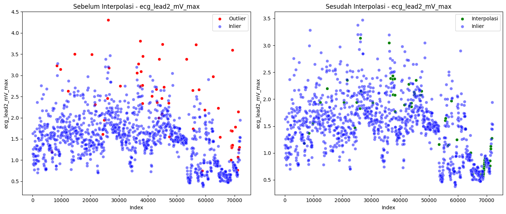
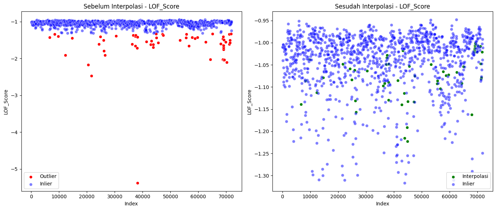
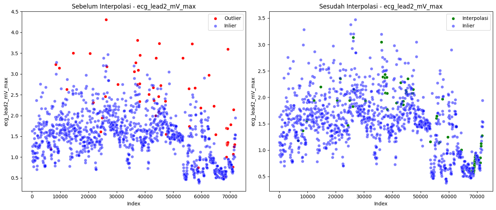
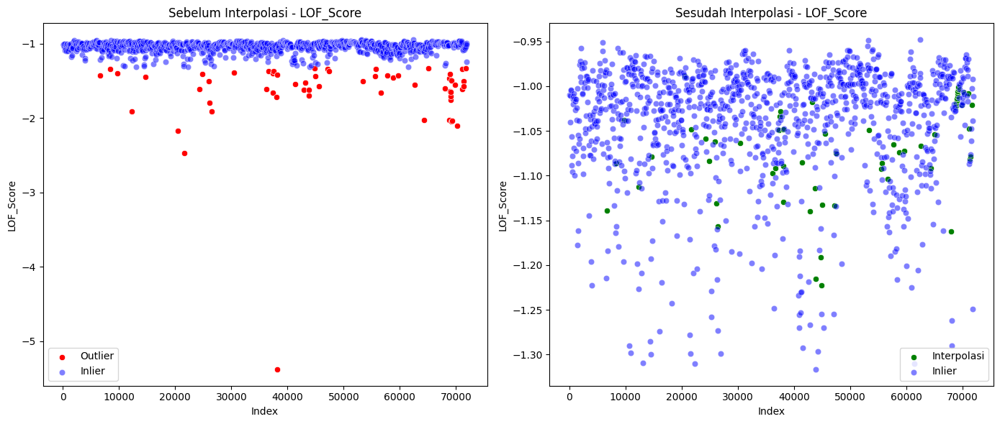
Seleksi Fitur#
Untuk seleksi fitur disini saya memanfaatkan korelasi matrix untuk mencari hubungan fitur lain dengan HR diatas 0.5 / -0.5
df_main = df_main.drop(['LOF_Score', 'Outlier'], axis=1)
corr_matrix = df_main.corr()
plt.figure(figsize=(12, 10))
sns.heatmap(corr_matrix, annot=True, fmt=".2f", cmap='coolwarm')
plt.title('Matriks Korelasi Fitur')
plt.show()
disini fitur yang saya pilih :
RR_interval : meskipun korelasinya terbalik namun sangat kuat terhatap HR sebesar 0.99
signal ECG lead 2 max (tertingi) : mempunyai korelasi walaupun sedikit lemah
selected_df = df_main[['ecg_lead2_mV_max','RR_interval_s', 'heart_rate_bpm']]
selected_df
| ecg_lead2_mV_max | RR_interval_s | heart_rate_bpm | |
|---|---|---|---|
| time_s | |||
| 60.0 | 1.150 | 0.796684 | 75 |
| 120.0 | 1.630 | 0.800160 | 75 |
| 180.0 | 0.910 | 0.786421 | 76 |
| 240.0 | 1.260 | 0.764861 | 78 |
| 300.0 | 1.090 | 0.763949 | 79 |
| ... | ... | ... | ... |
| 71700.0 | 1.275 | 0.782518 | 77 |
| 71760.0 | 1.545 | 0.768557 | 78 |
| 71820.0 | 1.445 | 0.769077 | 78 |
| 71880.0 | 1.945 | 0.781316 | 77 |
| 71940.0 | 1.530 | 0.757150 | 79 |
1199 rows × 3 columns
selected_df["time_m"] = selected_df.index / 60
selected_df.reset_index(drop=True, inplace=True)
selected_df["time_m"] = selected_df["time_m"].astype(int)
selected_df.set_index("time_m", inplace=True)
selected_df
C:\Users\ahmad\AppData\Local\Temp\ipykernel_20456\1136773280.py:1: SettingWithCopyWarning:
A value is trying to be set on a copy of a slice from a DataFrame.
Try using .loc[row_indexer,col_indexer] = value instead
See the caveats in the documentation: https://pandas.pydata.org/pandas-docs/stable/user_guide/indexing.html#returning-a-view-versus-a-copy
selected_df["time_m"] = selected_df.index / 60
C:\Users\ahmad\AppData\Local\Temp\ipykernel_20456\1136773280.py:5: SettingWithCopyWarning:
A value is trying to be set on a copy of a slice from a DataFrame.
Try using .loc[row_indexer,col_indexer] = value instead
See the caveats in the documentation: https://pandas.pydata.org/pandas-docs/stable/user_guide/indexing.html#returning-a-view-versus-a-copy
selected_df["time_m"] = selected_df["time_m"].astype(int)
| ecg_lead2_mV_max | RR_interval_s | heart_rate_bpm | |
|---|---|---|---|
| time_m | |||
| 1 | 1.150 | 0.796684 | 75 |
| 2 | 1.630 | 0.800160 | 75 |
| 3 | 0.910 | 0.786421 | 76 |
| 4 | 1.260 | 0.764861 | 78 |
| 5 | 1.090 | 0.763949 | 79 |
| ... | ... | ... | ... |
| 1195 | 1.275 | 0.782518 | 77 |
| 1196 | 1.545 | 0.768557 | 78 |
| 1197 | 1.445 | 0.769077 | 78 |
| 1198 | 1.945 | 0.781316 | 77 |
| 1199 | 1.530 | 0.757150 | 79 |
1199 rows × 3 columns
Menyiapkan Data untuk Recursive Multi-step Forecasting#
from sklearn.preprocessing import StandardScaler # type: ignore
scaler = StandardScaler()
scaled_features = scaler.fit_transform(selected_df)
scaled_df = pd.DataFrame(scaled_features, index=selected_df.index, columns=selected_df.columns)
# Misalnya, 80% data untuk pelatihan dan 20% untuk pengujian
train_size = int(len(scaled_df) * 0.8)
train, test = scaled_df.iloc[:train_size], scaled_df.iloc[train_size:]
Membuat Input-Output untuk Model Direct Forcasting#
Untuk pendekatan direct multistep, saya akan membuat target prediksi untuk langkah tertentu. Misalnya, jika saya ingin memprediksi HR 10 menit ke depan, tentukan berapa interval waktu yang mewakili 10 menit dalam dataset saya (misalnya, jika data per detik, 600 langkah).
Namun, umumnya, prediksi multistep dibagi berdasarkan langkah waktu yang konsisten. Misalkan data saya diambil setiap 1 menit, maka 10 langkah ke depan.
from sklearn.metrics import mean_squared_error, mean_absolute_error,mean_absolute_percentage_error # type: ignore
import matplotlib.pyplot as plt # type: ignore
from tensorflow.keras.models import Sequential # type: ignore
from tensorflow.keras.layers import LSTM, Dense, Dropout # type: ignore
from tensorflow.keras.callbacks import EarlyStopping # type: ignore
def create_multi_output_data(data, target_col, steps=10):
X, y = [], []
for i in range(len(data) - steps):
X.append(data.iloc[i:i+steps].values)
y.append(data[target_col].iloc[i+1:i+steps+1].values) # Prediksi 1 hingga 10 langkah ke depan
return np.array(X), np.array(y)
Pada Direct Multistep Forecasting, model dirancang untuk memetakan input window ke output window secara langsung. Artinya, model belajar hubungan antara data historis dengan beberapa langkah waktu ke depan dalam satu proses pelatihan. Dengan demikian, saat melakukan prediksi, model dapat menghasilkan 10 prediksi HR sekaligus tanpa perlu memprediksi satu per satu.
Input Window (n steps) Output Window (m steps) ┌─────────────┐ ┌──────────────────┐ │ Step t-n+1│ │ Step t+1 │ │ Step t-n+2 │ │ Step t+2 │ │ … │ ──> Model ────> │ … │ │ Step t │ │ Step t+m │ └─────────────┘ └──────────────────┘
Input Window: Sekuens data historis sebanyak n langkah waktu (misalnya, 10 menit terakhir).
Output Window: Sekuens data target sebanyak m langkah waktu (misalnya, 10 menit ke depan).
steps = 10 # Jumlah langkah waktu
X_train, y_train = create_multi_output_data(train, 'heart_rate_bpm', steps)
X_test, y_test = create_multi_output_data(test, 'heart_rate_bpm', steps)
Aspek |
Direct Multistep Forecasting |
Recursive Multistep Forecasting |
|---|---|---|
Jumlah Prediksi Langsung |
Beberapa langkah waktu (m langkah) sekaligus |
Satu langkah waktu (1 langkah) setiap kali memprediksi |
Kompleksitas Model Lebih kompleks karena menghasilkan beberapa output sekaligus |
Lebih sederhana karena hanya menghasilkan satu output per langkah |
|
Akumulasi Kesalahan |
Lebih rendah karena semua prediksi dihasilkan dalam satu langkah |
Lebih tinggi karena setiap prediksi bergantung pada prediksi sebelumnya |
Efisiensi Waktu |
Lebih efisien karena hanya satu kali prediksi untuk m langkah waktu |
Kurang efisien karena memerlukan m kali prediksi untuk m langkah waktu |
Penggunaan Data |
Menggunakan data historis untuk menghasilkan semua prediksi sekaligus |
Menggunakan data historis dan prediksi sebelumnya untuk menghasilkan prediksi berikutnya |
Modelling#
LSTM#
Menggunakan LSTM dengan satu lapisan tersembunyi dan lapisan Dropout untuk mencegah overfitting. Output layer memiliki 10 neuron untuk menghasilkan 10 prediksi sekaligus.
model = Sequential()
model.add(LSTM(100, activation='relu', input_shape=(steps, X_train.shape[2])))
model.add(Dropout(0.2))
model.add(Dense(steps)) # Output layer dengan 10 unit untuk 10 langkah ke depan
# Mengompilasi model
model.compile(optimizer='adam', loss='mse', metrics=['mae', 'mape'])
model.summary()
e:\apps\anaconda3\envs\MLEnv\Lib\site-packages\keras\src\layers\rnn\rnn.py:200: UserWarning: Do not pass an `input_shape`/`input_dim` argument to a layer. When using Sequential models, prefer using an `Input(shape)` object as the first layer in the model instead.
super().__init__(**kwargs)
Model: "sequential_3"
┏━━━━━━━━━━━━━━━━━━━━━━━━━━━━━━━━━┳━━━━━━━━━━━━━━━━━━━━━━━━┳━━━━━━━━━━━━━━━┓ ┃ Layer (type) ┃ Output Shape ┃ Param # ┃ ┡━━━━━━━━━━━━━━━━━━━━━━━━━━━━━━━━━╇━━━━━━━━━━━━━━━━━━━━━━━━╇━━━━━━━━━━━━━━━┩ │ lstm_3 (LSTM) │ (None, 100) │ 41,600 │ ├─────────────────────────────────┼────────────────────────┼───────────────┤ │ dropout_3 (Dropout) │ (None, 100) │ 0 │ ├─────────────────────────────────┼────────────────────────┼───────────────┤ │ dense_3 (Dense) │ (None, 10) │ 1,010 │ └─────────────────────────────────┴────────────────────────┴───────────────┘
Total params: 42,610 (166.45 KB)
Trainable params: 42,610 (166.45 KB)
Non-trainable params: 0 (0.00 B)
Penjelasan:
LSTM Layer: Menangkap dependensi temporal dalam data.
Dropout Layer: Mencegah overfitting dengan mengabaikan neuron secara acak selama pelatihan.
Dense Layer: Menghasilkan 10 output, masing-masing untuk 10 menit ke depan.
Menggunakan Early Stopping untuk menghentikan pelatihan saat model tidak lagi meningkatkan performa pada data validasi.
early_stop = EarlyStopping(monitor='val_loss', patience=10, restore_best_weights=True)
# Melatih model
history = model.fit(
X_train, y_train,
epochs=100,
batch_size=32,
validation_data=(X_test, y_test),
callbacks=[early_stop],
verbose=1
)
Epoch 1/100
30/30 ━━━━━━━━━━━━━━━━━━━━ 4s 32ms/step - loss: 0.5171 - mae: 0.5848 - mape: 106.9464 - val_loss: 95.7156 - val_mae: 6.5309 - val_mape: 385.3428
Epoch 2/100
30/30 ━━━━━━━━━━━━━━━━━━━━ 1s 17ms/step - loss: 0.1019 - mae: 0.2391 - mape: 96.4156 - val_loss: 4.8154 - val_mae: 1.4835 - val_mape: 95.7315
Epoch 3/100
30/30 ━━━━━━━━━━━━━━━━━━━━ 1s 17ms/step - loss: 0.0771 - mae: 0.2038 - mape: 94.4783 - val_loss: 1.7239 - val_mae: 0.9276 - val_mape: 64.7436
Epoch 4/100
30/30 ━━━━━━━━━━━━━━━━━━━━ 1s 17ms/step - loss: 0.0736 - mae: 0.1947 - mape: 89.4942 - val_loss: 0.6393 - val_mae: 0.5665 - val_mape: 41.2850
Epoch 5/100
30/30 ━━━━━━━━━━━━━━━━━━━━ 1s 18ms/step - loss: 0.0664 - mae: 0.1860 - mape: 89.3316 - val_loss: 0.3197 - val_mae: 0.3975 - val_mape: 30.0755
Epoch 6/100
30/30 ━━━━━━━━━━━━━━━━━━━━ 1s 17ms/step - loss: 0.0564 - mae: 0.1717 - mape: 84.7383 - val_loss: 0.0828 - val_mae: 0.2028 - val_mape: 16.5087
Epoch 7/100
30/30 ━━━━━━━━━━━━━━━━━━━━ 1s 16ms/step - loss: 0.0540 - mae: 0.1693 - mape: 81.8725 - val_loss: 0.2931 - val_mae: 0.3569 - val_mape: 24.7374
Epoch 8/100
30/30 ━━━━━━━━━━━━━━━━━━━━ 1s 18ms/step - loss: 0.0521 - mae: 0.1652 - mape: 79.6543 - val_loss: 0.1740 - val_mae: 0.2911 - val_mape: 20.5618
Epoch 9/100
30/30 ━━━━━━━━━━━━━━━━━━━━ 1s 16ms/step - loss: 0.0499 - mae: 0.1607 - mape: 82.5813 - val_loss: 0.1258 - val_mae: 0.2434 - val_mape: 20.3932
Epoch 10/100
30/30 ━━━━━━━━━━━━━━━━━━━━ 1s 16ms/step - loss: 0.0472 - mae: 0.1584 - mape: 67.7245 - val_loss: 0.0493 - val_mae: 0.1667 - val_mape: 14.9595
Epoch 11/100
30/30 ━━━━━━━━━━━━━━━━━━━━ 1s 17ms/step - loss: 0.0465 - mae: 0.1558 - mape: 72.0701 - val_loss: 0.1156 - val_mae: 0.2272 - val_mape: 18.9016
Epoch 12/100
30/30 ━━━━━━━━━━━━━━━━━━━━ 1s 18ms/step - loss: 0.0428 - mae: 0.1493 - mape: 76.7616 - val_loss: 0.0474 - val_mae: 0.1570 - val_mape: 14.5464
Epoch 13/100
30/30 ━━━━━━━━━━━━━━━━━━━━ 1s 18ms/step - loss: 0.0449 - mae: 0.1502 - mape: 68.7101 - val_loss: 0.1354 - val_mae: 0.2448 - val_mape: 21.2572
Epoch 14/100
30/30 ━━━━━━━━━━━━━━━━━━━━ 1s 19ms/step - loss: 0.0387 - mae: 0.1435 - mape: 65.5870 - val_loss: 0.0500 - val_mae: 0.1584 - val_mape: 14.8722
Epoch 15/100
30/30 ━━━━━━━━━━━━━━━━━━━━ 1s 18ms/step - loss: 0.0407 - mae: 0.1441 - mape: 71.9667 - val_loss: 0.0710 - val_mae: 0.1798 - val_mape: 15.3394
Epoch 16/100
30/30 ━━━━━━━━━━━━━━━━━━━━ 1s 22ms/step - loss: 0.0378 - mae: 0.1383 - mape: 65.4546 - val_loss: 0.1255 - val_mae: 0.2310 - val_mape: 19.6323
Epoch 17/100
30/30 ━━━━━━━━━━━━━━━━━━━━ 1s 21ms/step - loss: 0.0372 - mae: 0.1399 - mape: 67.0008 - val_loss: 0.1957 - val_mae: 0.2804 - val_mape: 19.8866
Epoch 18/100
30/30 ━━━━━━━━━━━━━━━━━━━━ 1s 19ms/step - loss: 0.0364 - mae: 0.1391 - mape: 62.3154 - val_loss: 0.1859 - val_mae: 0.2788 - val_mape: 19.3974
Epoch 19/100
30/30 ━━━━━━━━━━━━━━━━━━━━ 1s 25ms/step - loss: 0.0367 - mae: 0.1371 - mape: 67.5017 - val_loss: 0.1891 - val_mae: 0.2766 - val_mape: 19.9583
Epoch 20/100
30/30 ━━━━━━━━━━━━━━━━━━━━ 1s 16ms/step - loss: 0.0359 - mae: 0.1357 - mape: 61.3854 - val_loss: 0.2353 - val_mae: 0.3101 - val_mape: 22.1192
Epoch 21/100
30/30 ━━━━━━━━━━━━━━━━━━━━ 1s 18ms/step - loss: 0.0342 - mae: 0.1312 - mape: 61.3386 - val_loss: 0.1648 - val_mae: 0.2508 - val_mape: 17.7892
Epoch 22/100
30/30 ━━━━━━━━━━━━━━━━━━━━ 1s 19ms/step - loss: 0.0332 - mae: 0.1321 - mape: 62.0603 - val_loss: 0.0863 - val_mae: 0.1931 - val_mape: 14.5641
import joblib # type: ignore
model.save('hr_prediction_model.keras')
scaler = joblib.load('scaler.save')
y_pred = model.predict(X_test)
rmse = np.sqrt(mean_squared_error(y_test, y_pred, multioutput='raw_values'))
mape = mean_absolute_percentage_error(y_test, y_pred, multioutput='raw_values') * 100 # dalam persen
for i in range(steps):
print(f'RMSE Step {i+1}: {rmse[i]:.2f}')
print(f'MAPE Step {i+1}: {mape[i]:.2f}%')
steps_to_plot = 10
for i in range(steps_to_plot):
plt.figure(figsize=(12,6))
plt.plot(y_test[:, i], label=f'Actual HR Step {i+1}')
plt.plot(y_pred[:, i], label=f'Predicted HR Step {i+1}')
plt.title(f'Actual vs Predicted HR Step {i+1}')
plt.xlabel('Sample')
plt.ylabel('Heart Rate (bpm)')
plt.legend()
plt.show()
8/8 ━━━━━━━━━━━━━━━━━━━━ 0s 8ms/step
RMSE Step 1: 0.28
MAPE Step 1: 13.96%
RMSE Step 2: 0.29
MAPE Step 2: 13.73%
RMSE Step 3: 0.28
MAPE Step 3: 13.54%
RMSE Step 4: 0.18
MAPE Step 4: 11.96%
RMSE Step 5: 0.22
MAPE Step 5: 12.97%
RMSE Step 6: 0.18
MAPE Step 6: 11.73%
RMSE Step 7: 0.14
MAPE Step 7: 10.76%
RMSE Step 8: 0.14
MAPE Step 8: 15.55%
RMSE Step 9: 0.17
MAPE Step 9: 17.08%
RMSE Step 10: 0.21
MAPE Step 10: 24.19%
def predict_hr_10_steps(model, scaler, new_data, steps=10):
if len(new_data) < steps:
raise ValueError(f'new_data harus memiliki minimal {steps} baris')
recent_data = new_data.iloc[-steps:]
scaled_recent = scaler.transform(recent_data)
input_data = np.expand_dims(scaled_recent, axis=0)
prediction = model.predict(input_data)
hr_scaler = scaler.scale_[2]
hr_mean = scaler.mean_[2]
predicted_hr = prediction[0] * hr_scaler + hr_mean # Mengembalikan skala asli
return predicted_hr.tolist()
from tensorflow.keras.models import load_model # type: ignore
model = load_model('hr_prediction_model.keras')
scaler = joblib.load('scaler.save')
latest_data = pd.DataFrame({
'ecg_lead2_mV_max': [0.275,0.355,0.44,0.505,0.545,0.61,0.66,0.685,0.745,0.785],
'RR_interval_s': [0.8, 0.9, 0.6, 0.5, 0.7, 0.9, 0.6, 0.6, 0.7, 0.8],
'heart_rate_bpm': [72,74,75,71,69,81,79,76,74,71]
})
predicted_hr = predict_hr_10_steps(model, scaler, latest_data, steps=10)
print(f'Predicted HR 10 minutes ahead: {predicted_hr}')
1/1 ━━━━━━━━━━━━━━━━━━━━ 0s 183ms/step
Predicted HR 10 minutes ahead: [75.62495422363281, 77.43489074707031, 77.9334487915039, 79.82027435302734, 80.13969421386719, 80.72332000732422, 79.52544403076172, 80.18740844726562, 78.11927795410156, 77.97986602783203]
GRU#
from tensorflow.keras.layers import GRU, Dense, Dropout # type: ignore
# Definisikan arsitektur model GRU
model_gru = Sequential()
model_gru.add(GRU(100, activation='relu', input_shape=(steps, X_train.shape[2])))
model_gru.add(Dropout(0.2))
model_gru.add(Dense(steps)) # Output layer dengan 10 unit untuk 10 langkah ke depan
# Kompilasi model
model_gru.compile(optimizer='adam', loss='mse', metrics=['mae', 'mape'])
model_gru.summary()
e:\apps\anaconda3\envs\MLEnv\Lib\site-packages\keras\src\layers\rnn\rnn.py:200: UserWarning: Do not pass an `input_shape`/`input_dim` argument to a layer. When using Sequential models, prefer using an `Input(shape)` object as the first layer in the model instead.
super().__init__(**kwargs)
Model: "sequential_4"
┏━━━━━━━━━━━━━━━━━━━━━━━━━━━━━━━━━┳━━━━━━━━━━━━━━━━━━━━━━━━┳━━━━━━━━━━━━━━━┓ ┃ Layer (type) ┃ Output Shape ┃ Param # ┃ ┡━━━━━━━━━━━━━━━━━━━━━━━━━━━━━━━━━╇━━━━━━━━━━━━━━━━━━━━━━━━╇━━━━━━━━━━━━━━━┩ │ gru (GRU) │ (None, 100) │ 31,500 │ ├─────────────────────────────────┼────────────────────────┼───────────────┤ │ dropout_4 (Dropout) │ (None, 100) │ 0 │ ├─────────────────────────────────┼────────────────────────┼───────────────┤ │ dense_4 (Dense) │ (None, 10) │ 1,010 │ └─────────────────────────────────┴────────────────────────┴───────────────┘
Total params: 32,510 (126.99 KB)
Trainable params: 32,510 (126.99 KB)
Non-trainable params: 0 (0.00 B)
from tensorflow.keras.callbacks import EarlyStopping # type: ignore
early_stop_gru = EarlyStopping(monitor='val_loss', patience=10, restore_best_weights=True)
# Melatih model GRU
history_gru = model_gru.fit(
X_train, y_train,
epochs=100,
batch_size=32,
validation_data=(X_test, y_test),
callbacks=[early_stop_gru],
verbose=1
)
Epoch 1/100
30/30 ━━━━━━━━━━━━━━━━━━━━ 4s 36ms/step - loss: 0.5154 - mae: 0.5855 - mape: 115.9043 - val_loss: 1.1883 - val_mae: 0.9620 - val_mape: 67.9896
Epoch 2/100
30/30 ━━━━━━━━━━━━━━━━━━━━ 1s 24ms/step - loss: 0.1466 - mae: 0.2872 - mape: 112.6970 - val_loss: 0.0772 - val_mae: 0.2099 - val_mape: 24.3524
Epoch 3/100
30/30 ━━━━━━━━━━━━━━━━━━━━ 1s 24ms/step - loss: 0.0871 - mae: 0.2148 - mape: 102.4791 - val_loss: 0.0514 - val_mae: 0.1657 - val_mape: 21.5314
Epoch 4/100
30/30 ━━━━━━━━━━━━━━━━━━━━ 1s 24ms/step - loss: 0.0674 - mae: 0.1897 - mape: 99.4569 - val_loss: 0.0336 - val_mae: 0.1384 - val_mape: 17.5689
Epoch 5/100
30/30 ━━━━━━━━━━━━━━━━━━━━ 1s 29ms/step - loss: 0.0643 - mae: 0.1880 - mape: 86.5550 - val_loss: 0.0305 - val_mae: 0.1353 - val_mape: 14.5999
Epoch 6/100
30/30 ━━━━━━━━━━━━━━━━━━━━ 1s 29ms/step - loss: 0.0583 - mae: 0.1769 - mape: 83.6733 - val_loss: 0.0220 - val_mae: 0.1145 - val_mape: 11.5303
Epoch 7/100
30/30 ━━━━━━━━━━━━━━━━━━━━ 1s 23ms/step - loss: 0.0535 - mae: 0.1659 - mape: 82.6330 - val_loss: 0.0254 - val_mae: 0.1211 - val_mape: 11.7899
Epoch 8/100
30/30 ━━━━━━━━━━━━━━━━━━━━ 1s 23ms/step - loss: 0.0485 - mae: 0.1606 - mape: 76.3724 - val_loss: 0.0240 - val_mae: 0.1175 - val_mape: 11.9908
Epoch 9/100
30/30 ━━━━━━━━━━━━━━━━━━━━ 1s 28ms/step - loss: 0.0426 - mae: 0.1515 - mape: 77.3925 - val_loss: 0.0461 - val_mae: 0.1635 - val_mape: 15.3183
Epoch 10/100
30/30 ━━━━━━━━━━━━━━━━━━━━ 1s 30ms/step - loss: 0.0421 - mae: 0.1496 - mape: 73.5529 - val_loss: 0.0258 - val_mae: 0.1250 - val_mape: 11.6142
Epoch 11/100
30/30 ━━━━━━━━━━━━━━━━━━━━ 1s 27ms/step - loss: 0.0401 - mae: 0.1444 - mape: 65.9919 - val_loss: 0.0187 - val_mae: 0.1032 - val_mape: 10.9523
Epoch 12/100
30/30 ━━━━━━━━━━━━━━━━━━━━ 1s 20ms/step - loss: 0.0402 - mae: 0.1435 - mape: 62.8351 - val_loss: 0.0268 - val_mae: 0.1250 - val_mape: 12.5603
Epoch 13/100
30/30 ━━━━━━━━━━━━━━━━━━━━ 1s 21ms/step - loss: 0.0363 - mae: 0.1372 - mape: 63.4287 - val_loss: 0.0215 - val_mae: 0.1138 - val_mape: 11.0915
Epoch 14/100
30/30 ━━━━━━━━━━━━━━━━━━━━ 1s 18ms/step - loss: 0.0335 - mae: 0.1334 - mape: 62.4944 - val_loss: 0.0193 - val_mae: 0.1066 - val_mape: 10.7152
Epoch 15/100
30/30 ━━━━━━━━━━━━━━━━━━━━ 1s 21ms/step - loss: 0.0337 - mae: 0.1331 - mape: 62.9774 - val_loss: 0.0177 - val_mae: 0.0996 - val_mape: 9.5606
Epoch 16/100
30/30 ━━━━━━━━━━━━━━━━━━━━ 1s 20ms/step - loss: 0.0336 - mae: 0.1309 - mape: 61.5275 - val_loss: 0.0174 - val_mae: 0.0975 - val_mape: 9.8627
Epoch 17/100
30/30 ━━━━━━━━━━━━━━━━━━━━ 1s 25ms/step - loss: 0.0312 - mae: 0.1268 - mape: 58.3748 - val_loss: 0.0400 - val_mae: 0.1602 - val_mape: 13.0008
Epoch 18/100
30/30 ━━━━━━━━━━━━━━━━━━━━ 1s 20ms/step - loss: 0.0330 - mae: 0.1292 - mape: 57.0760 - val_loss: 0.0225 - val_mae: 0.1135 - val_mape: 10.7476
Epoch 19/100
30/30 ━━━━━━━━━━━━━━━━━━━━ 1s 21ms/step - loss: 0.0316 - mae: 0.1273 - mape: 56.0786 - val_loss: 0.0175 - val_mae: 0.0990 - val_mape: 10.2264
Epoch 20/100
30/30 ━━━━━━━━━━━━━━━━━━━━ 1s 23ms/step - loss: 0.0299 - mae: 0.1247 - mape: 60.0248 - val_loss: 0.0220 - val_mae: 0.1131 - val_mape: 10.3226
Epoch 21/100
30/30 ━━━━━━━━━━━━━━━━━━━━ 1s 20ms/step - loss: 0.0297 - mae: 0.1249 - mape: 55.8525 - val_loss: 0.0161 - val_mae: 0.0939 - val_mape: 9.6960
Epoch 22/100
30/30 ━━━━━━━━━━━━━━━━━━━━ 1s 19ms/step - loss: 0.0289 - mae: 0.1232 - mape: 55.2195 - val_loss: 0.0230 - val_mae: 0.1155 - val_mape: 10.7020
Epoch 23/100
30/30 ━━━━━━━━━━━━━━━━━━━━ 1s 20ms/step - loss: 0.0277 - mae: 0.1188 - mape: 56.4580 - val_loss: 0.0167 - val_mae: 0.0989 - val_mape: 10.0960
Epoch 24/100
30/30 ━━━━━━━━━━━━━━━━━━━━ 1s 21ms/step - loss: 0.0266 - mae: 0.1179 - mape: 53.4972 - val_loss: 0.0170 - val_mae: 0.0976 - val_mape: 11.2363
Epoch 25/100
30/30 ━━━━━━━━━━━━━━━━━━━━ 1s 20ms/step - loss: 0.0260 - mae: 0.1168 - mape: 53.6248 - val_loss: 0.0186 - val_mae: 0.1031 - val_mape: 10.3360
Epoch 26/100
30/30 ━━━━━━━━━━━━━━━━━━━━ 1s 19ms/step - loss: 0.0256 - mae: 0.1149 - mape: 49.4740 - val_loss: 0.0254 - val_mae: 0.1248 - val_mape: 11.0805
Epoch 27/100
30/30 ━━━━━━━━━━━━━━━━━━━━ 1s 18ms/step - loss: 0.0261 - mae: 0.1154 - mape: 53.4296 - val_loss: 0.0251 - val_mae: 0.1218 - val_mape: 10.7269
Epoch 28/100
30/30 ━━━━━━━━━━━━━━━━━━━━ 1s 18ms/step - loss: 0.0270 - mae: 0.1159 - mape: 50.6747 - val_loss: 0.0168 - val_mae: 0.0993 - val_mape: 10.3703
Epoch 29/100
30/30 ━━━━━━━━━━━━━━━━━━━━ 1s 17ms/step - loss: 0.0265 - mae: 0.1149 - mape: 50.2752 - val_loss: 0.0197 - val_mae: 0.1070 - val_mape: 10.0257
Epoch 30/100
30/30 ━━━━━━━━━━━━━━━━━━━━ 1s 15ms/step - loss: 0.0270 - mae: 0.1169 - mape: 52.5280 - val_loss: 0.0170 - val_mae: 0.0975 - val_mape: 9.8129
Epoch 31/100
30/30 ━━━━━━━━━━━━━━━━━━━━ 1s 16ms/step - loss: 0.0235 - mae: 0.1106 - mape: 51.9447 - val_loss: 0.0222 - val_mae: 0.1154 - val_mape: 10.4789
# Menyimpan model GRU dalam format SavedModel (.keras)
model_gru.save('model/hr_prediction_model_gru.keras')
# Prediksi pada data pengujian
y_pred_gru = model_gru.predict(X_test)
# Menghitung RMSE dan MAPE untuk setiap langkah ke depan
rmse_gru = np.sqrt(mean_squared_error(y_test, y_pred_gru, multioutput='raw_values'))
mape_gru = mean_absolute_percentage_error(y_test, y_pred_gru, multioutput='raw_values') * 100 # dalam persen
for i in range(steps):
print(f'GRU - RMSE Step {i+1}: {rmse_gru[i]:.2f}')
print(f'GRU - MAPE Step {i+1}: {mape_gru[i]:.2f}%')
8/8 ━━━━━━━━━━━━━━━━━━━━ 1s 61ms/step
GRU - RMSE Step 1: 0.15
GRU - MAPE Step 1: 10.07%
GRU - RMSE Step 2: 0.13
GRU - MAPE Step 2: 8.86%
GRU - RMSE Step 3: 0.12
GRU - MAPE Step 3: 8.22%
GRU - RMSE Step 4: 0.15
GRU - MAPE Step 4: 9.55%
GRU - RMSE Step 5: 0.11
GRU - MAPE Step 5: 7.91%
GRU - RMSE Step 6: 0.11
GRU - MAPE Step 6: 7.32%
GRU - RMSE Step 7: 0.10
GRU - MAPE Step 7: 8.14%
GRU - RMSE Step 8: 0.11
GRU - MAPE Step 8: 9.10%
GRU - RMSE Step 9: 0.08
GRU - MAPE Step 9: 6.99%
GRU - RMSE Step 10: 0.17
GRU - MAPE Step 10: 20.81%
# Visualisasi Prediksi vs Aktual untuk 3 langkah pertama
steps_to_plot = 10
for i in range(steps_to_plot):
plt.figure(figsize=(12,6))
plt.plot(y_test[:, i], label=f'Actual HR Step {i+1}')
plt.plot(y_pred_gru[:, i], label=f'Predicted HR Step {i+1}')
plt.title(f'GRU - Actual vs Predicted HR Step {i+1}')
plt.xlabel('Sample')
plt.ylabel('Heart Rate (bpm)')
plt.legend()
plt.grid(True)
plt.show()
 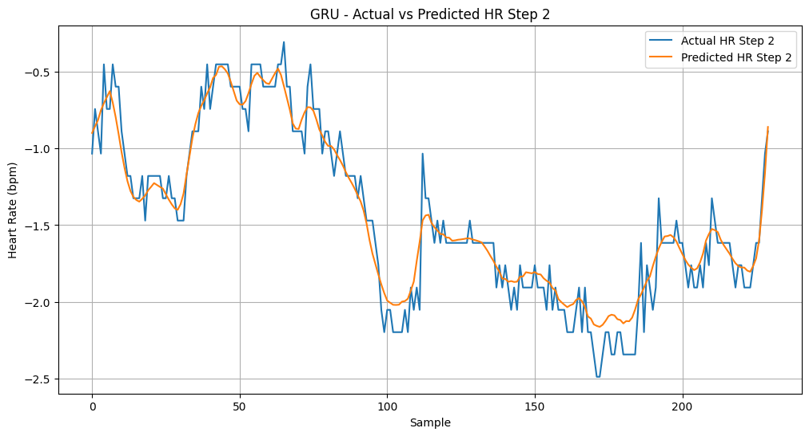
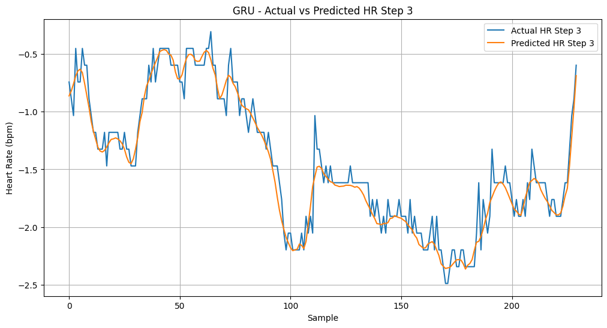
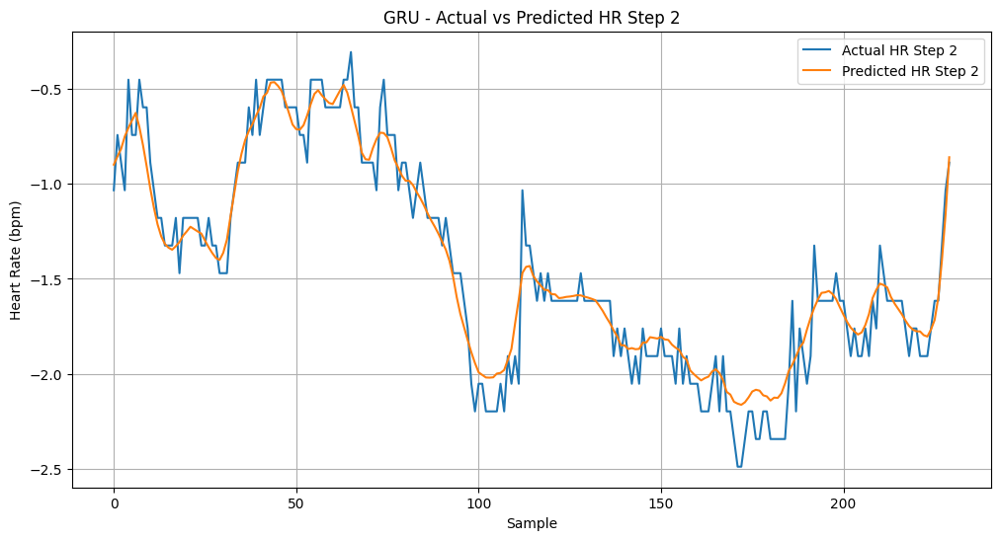
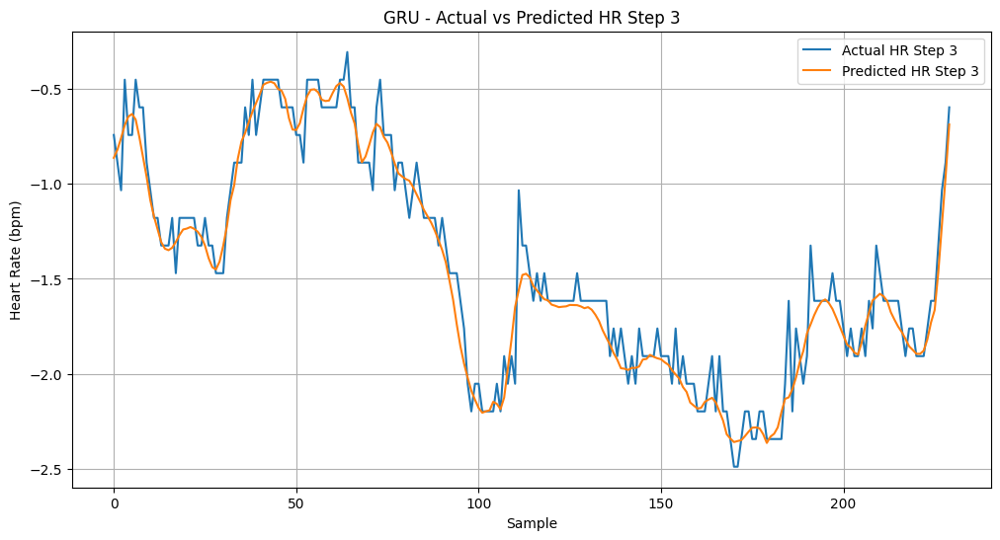
 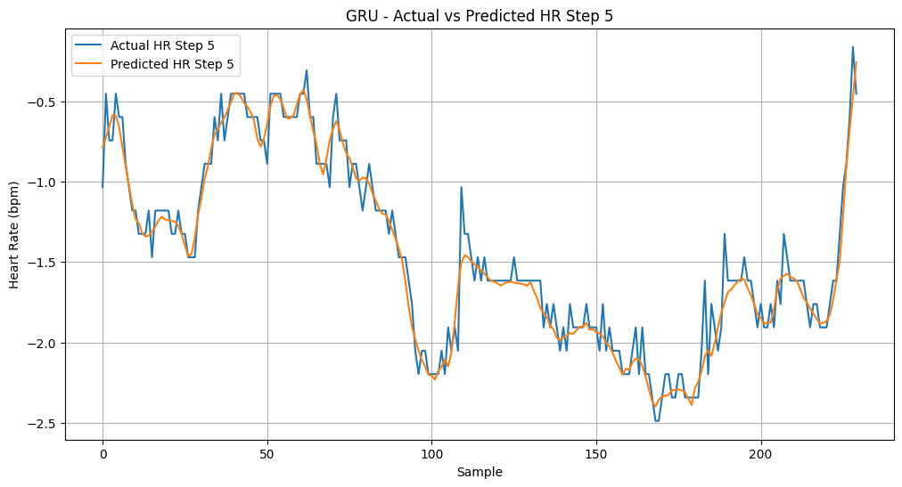
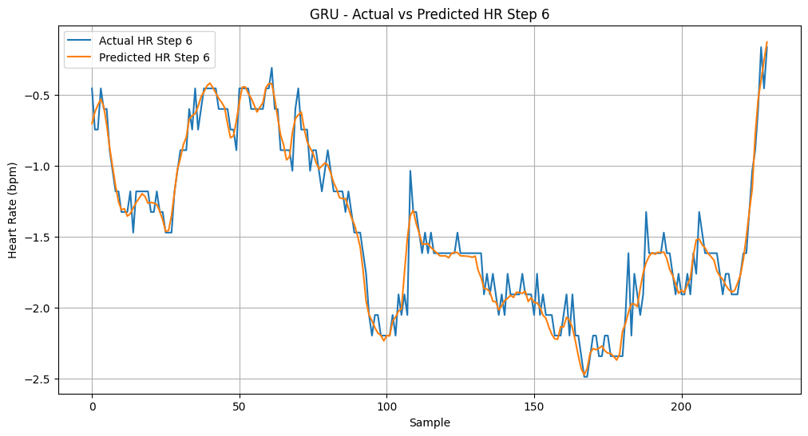
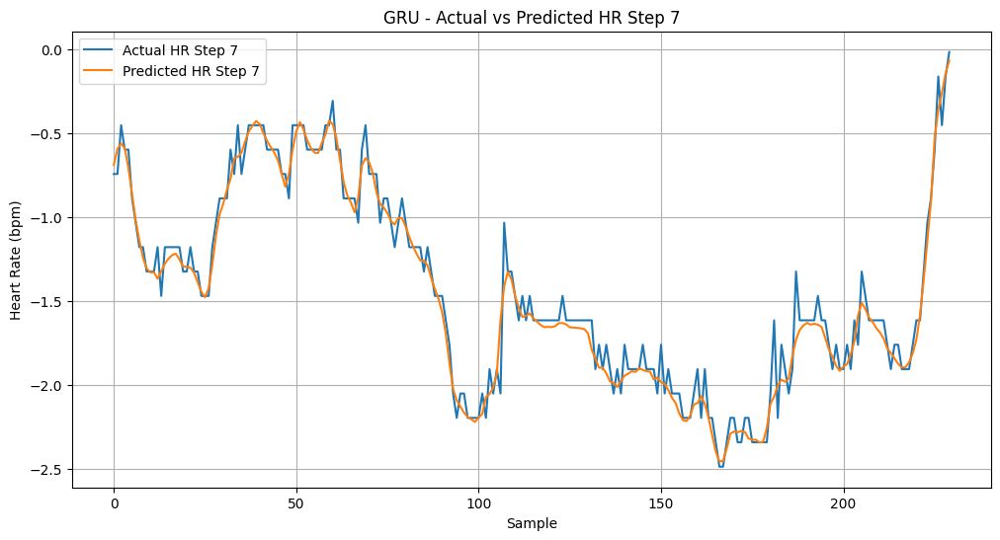
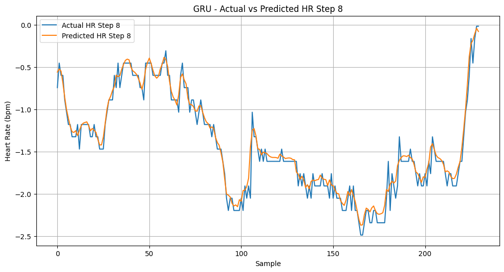
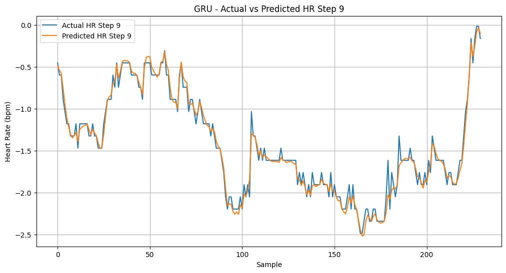
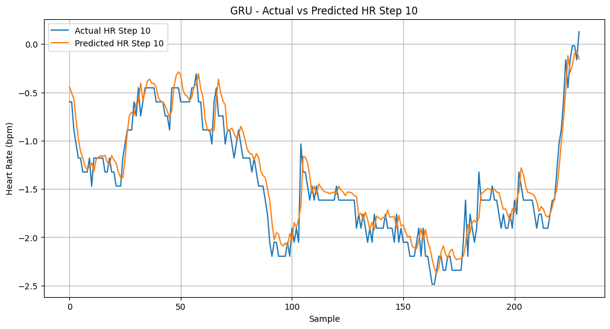
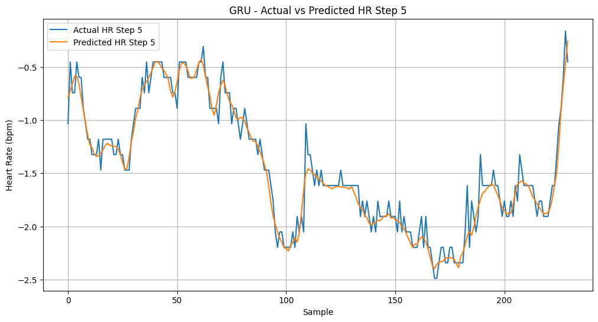
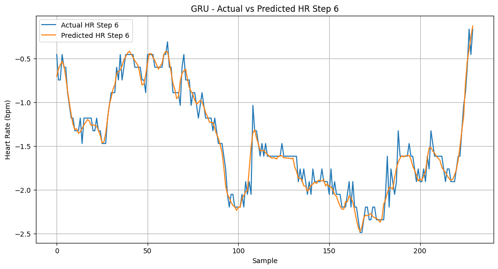
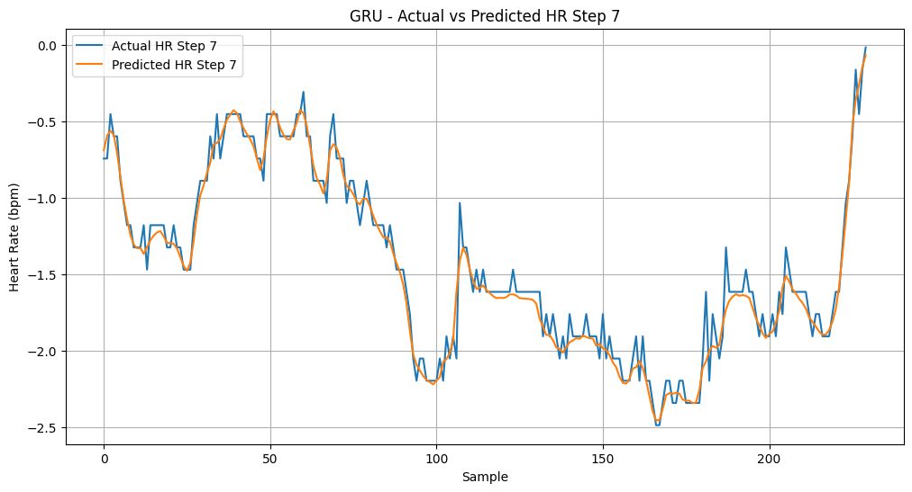
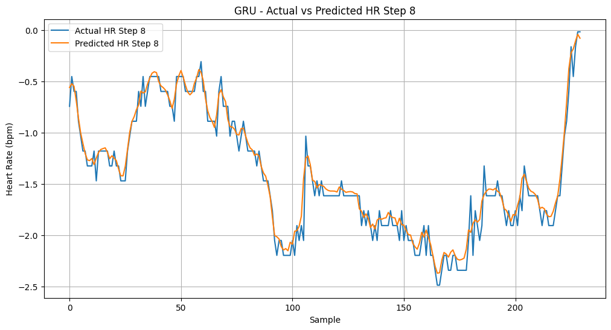
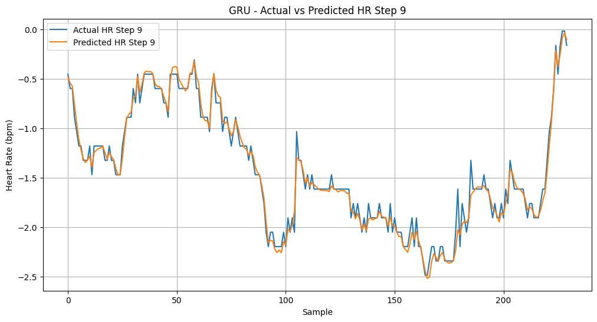
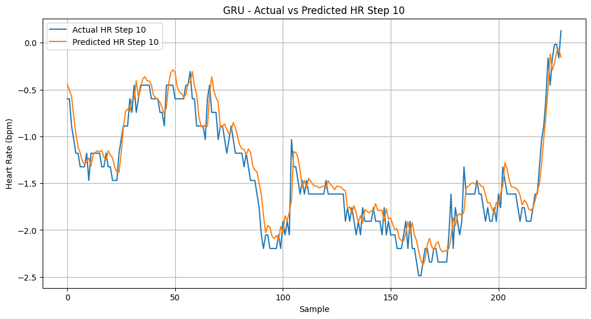
Deployement#
Website#
https://huggingface.co/spaces/ahmadnoval/PSD-Prediksi-detak-jantung-pasien